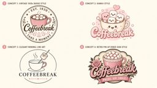

Free music software. Coffeebreak on itch:
https://coffeebreaks.itch.io

Coffeebreak Hymns Karaoke
Sing along to classic public-domain hymns
All hymns
Favourites
Back
♡
Play
Stop
Sing mode: off
Tempo
-
100%
+
Key
-
0
+
Sound
Organ
Record myself
Words and tunes are public domain. Backing melodies are original simple arrangements by Coffeebreak.